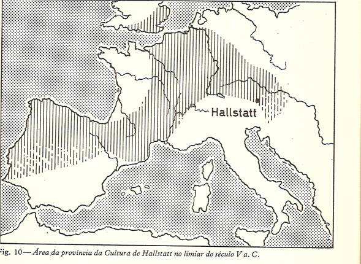
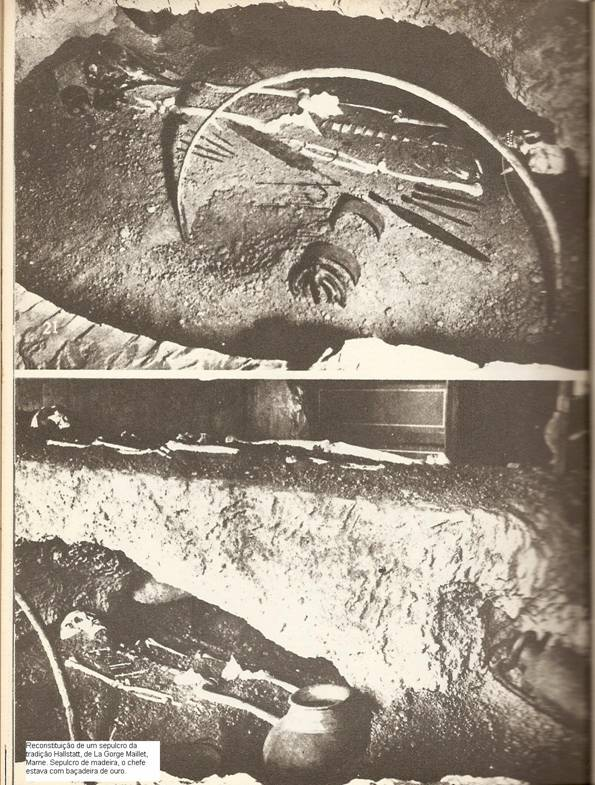
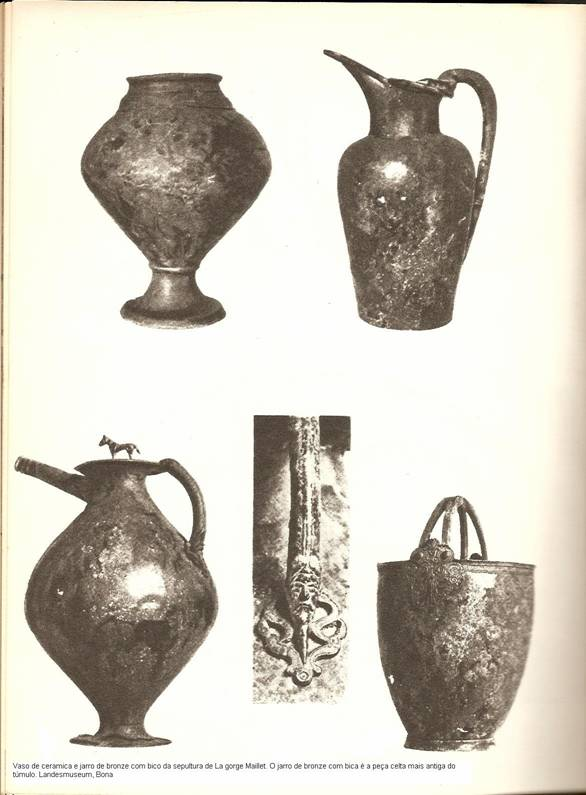
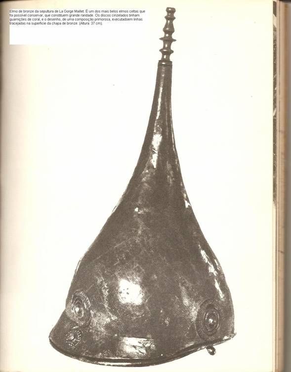

|
|
Os Celtas
por Bianca Alves Ferreira
A natureza era a companhia do homem primitivo. Ela fornecia
abrigo e alimento e, em retorno, a humanidade a reverenciava. As
religiões primitivas louvavam as pedras e montanhas, os campos e
florestas, os rios e oceanos.
A Voz da Floresta é uma ponte
mítica entre o mundo dos deuses e o dos homens, entrelaçado com a
veneração que os Celtas tinham pelas árvores.
Como uma
representação do universo, as raízes das árvores habitam o solo, o
conhecimento profundo da Terra. E o tronco une as raízes ao céu,
trazendo este conhecimento à luz.
A Cultura Hallstatt foi à
primeira das várias culturas existentes na Idade do Bronze. As
regiões ocidentais desta cultura entre a França e a Alemanha do
Este, já falavam a língua Celta. Por volta do ano 600 a.C., o
grafólogo Grego Herodotus escreve sobre os Celtas colocando-os para
além dos “Pilares de Hércules” (isto é, Espanha) e acima do Danúbio.
O nome "Celta" surgiu da tribo dominante dos Hallstatt, e tornou-se
um conceito unificador para toda a cultura.
Segundo
historiadores, a terra de origem dos Celtas era uma região da
Áustria, perto do sul da Alemanha. Dali, os Celtas expandiram-se
pela maior parte da Europa Continental e Bretanha. Na sua expansão
os Celtas abrangeram áreas que vão desde a Espanha à
Turquia.

Tomando posse de quase
toda a Europa, os Celtas dividiram esse continente em três partes: a
Central (teuts-land, q.s. terra de teut), a Ocidental (hôl-lan ou
ghôl-lan, q.s. terra baixa) e a Oriental (pôl-land, q.s. terra
alta); tudo o que estava a Norte dessas regiões denominavam de
dâhn-mark (q.s. o limite das almas), que ia do Rio Don às Colunas de
Hércules; aquele Don que os antigos franceses chamavam de Tanais e
que era baliza para a ross-land (q.s. terra do cavalo =
rússia).
Ainda em relação a este assunto, que obviamente liga os povos
célticos, está a palavra ask, de onde a denominação geral asktan
dada a vários povos (os mais interessados no assunto devem procurar
a velha Gramática da Língua D'Oc); ora, entendia-se por Trasks os
Asks orientais, por Tosks os Asks meridionais e por Vasks os Asks
ocidentais - daí, toscanos, estruscos, vascos...
Os Celtas
dominaram a Europa Central e Ocidental por milhares de anos. Mas só
mais recentemente os Celtas influenciaram a Europa no seu
desenvolvimento, a nível cultural, lingüístico e artístico. Os
Celtas como grupo e raça, há muito que desapareceram, exceto na
Irlanda e nas Terras Altas da Escócia.
Desde o domínio romano,
instigado pelo catolicismo, as culturas druidisa e celta foram alvos
de severa repressão, que fez com que fossem apagados quaisquer tipos
de informação a respeito delas embora na história de Roma conste que
Júlio César reconhecia a coragem que os druidas e celtas tinham em
enfrentar a morte em defesa de seus princípios e seus
territórios.
A bravura dos Celtas em batalha é lendária. Eles
desprezavam com freqüência as armaduras de batalha, indo para o
combate de corpo nu. Os homens e as mulheres na sociedade Celta eram
iguais; a igualdade de cargos e desempenhos era considerada igual em
termos de sexos. As mulheres tinham uma condição social igual á dos
homens sendo muitas vezes excelentes guerreiras, comerciantes e
governantes.

Os Celtas transmitiram a sua cultura oralmente, nunca escrevendo
a sua história ou os seus fatos. Isto explica a extrema falta de
conhecimento quanto aos seus contatos com as civilizações clássicas
de Grécia e Roma. Os Celtas eram na generalidade bem instruídos,
particularmente no que diz respeito á religião, filosofia, geografia
e astronomia.
E que influência tiveram os Celtas na Literatura
européia que tanta força emprestou ao pré-Cristianismo? As
literaturas no gaélico, no galês ou no bretão, exerceram influência
através da Poesia Pastoril e dos Romances de Cavalaria (a saga do
Rei Arthur e a busca do Santo Graal), das Ciências Herméticas ou
Ocultas, da Adivinhação e da Cultura Rúnica, até a formação
ideológica das elites em Ordens de Cavalaria e Confrarias (do tipo
Rosa cruzes e Maçonaria).

Os essênios, os nazarenos e outras seitas judaico-palestinas
também tiveram influencia céltica. Importante ainda é o fato de se
poder ligar o desenvolvimento da Música e da Poesia aos cultos da
Voluspa: mesmo rudimentar, o Oráculo passou a ser lido/interpretado
em voz ritmada e em versos rimados. A Völuspá ("A profecia da
vidente") é um dos principais poemas do medievo paganista germânico.
Faz parte de uma coletânea de poemas anônimos conhecidos como Edda
poética, pertencendo a um grupo de poemas relativos à mitologia e
divindades germânicas.
Foi grande a importância dessa
Civilização antiga na formação do ser-português, na Língua Lusa que
a saga marítima de 1500 levou ao mundo, legou aos africanos e criou
o tupi-afro-brasileiro, mesmo que à custa da destruição dos
nativos.
Os povos Celtas, em cinco grupos, entraram na velha
província romana, chamada Lusitânia, pelo Algarve (os cinetes),
entre os rios Sado e Tejo (os sempsos), entre a Estremadura e o Cabo
Carvoeiro (os sepes), pelo centro (os pernix lucis) e pelo norte (os
draganes). Sim, nem a Roma imperial conseguiu vencê-los na
Grã-Bretanha. Foi grande a contribuição dos povos Celtas para a
Cultura Portuguesa.

|